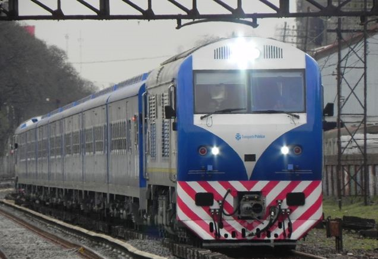

Locomotora csr modelo sdd7
¿Porque es diesel eléctrica?
Porque cuenta con un motor diesel, cuya función principal es mover a través de un acople flexible al campo giratorio de un alternador principal sincrónico. Este cuando se comporta como tal, genera una fuerza electromotriz inducida que hace circular una corriente alterna trifásica que ingresara a un rectificador de silicio, donde sera rectificada en continua, y alimentara a los bobinados de campo e inducido de los motores de tracción. Una vez que cierra negativo, se energizan los mismos, y por atracción y repulsión polar se pondrán en giro. Como estos tienen un piñon de 23 dientes que engrana con una corona de 105 dientes, la cual se encuentra fija al eje de llanta, la Locomotora empieza a traccionar